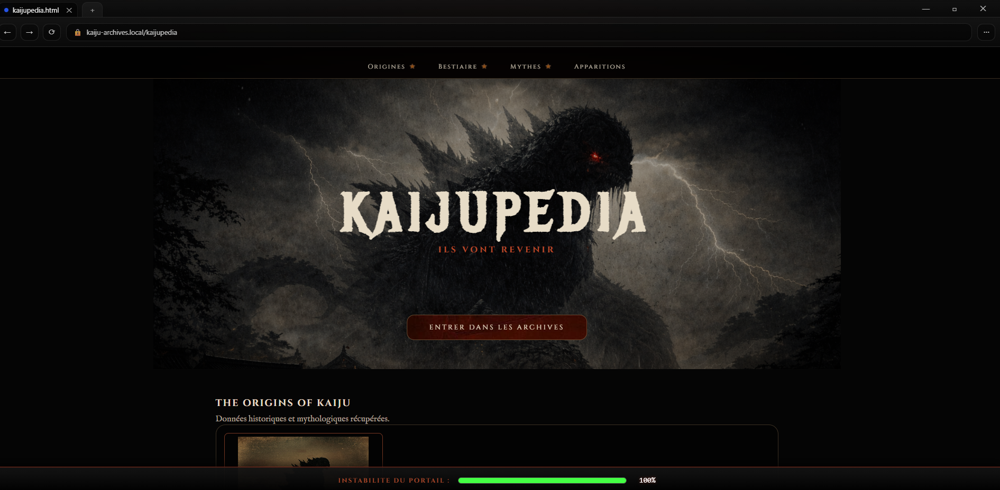
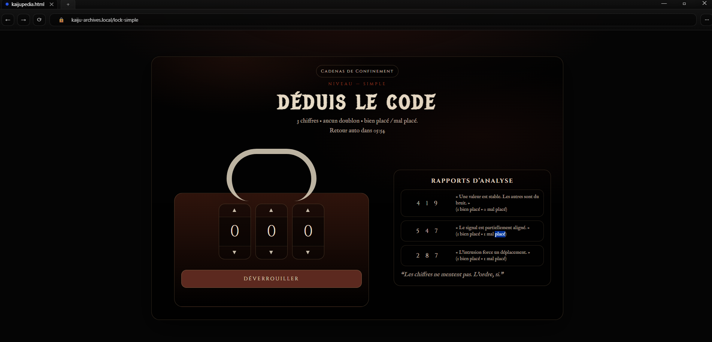
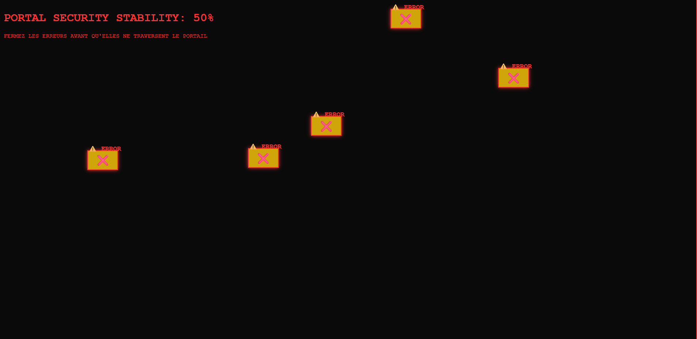
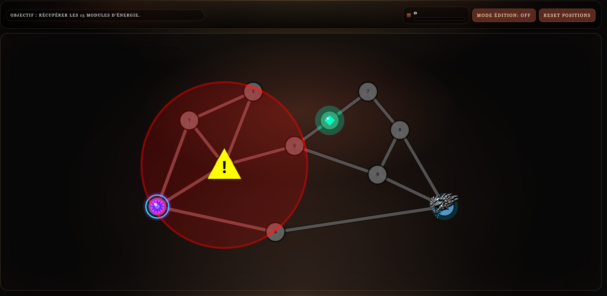

Jeu développé en 48h lors d’une Game Jam à l’Université de Lorraine. Le joueur doit empêcher un Kaiju de passer du monde numérique au monde réel en résolvant des énigmes et mini-jeux.
🔗 Voir le GitHub
Projet réalisé du 3 au 5 février 2026 lors d’une Game Jam organisée par l’Université de Lorraine. Travail en équipe de 5 étudiants avec un objectif : créer un jeu complet en 48h autour du thème Kaiju.
Le joueur active accidentellement un portail numérique permettant à un Kaiju de s’échapper. Il doit résoudre plusieurs énigmes pour empêcher la catastrophe.
Déduire un code à partir d’indices.
Trouver une erreur dans l’interface.
Cliquer sur les erreurs rapidement.
Collecter des modules et éviter le Kaiju.


